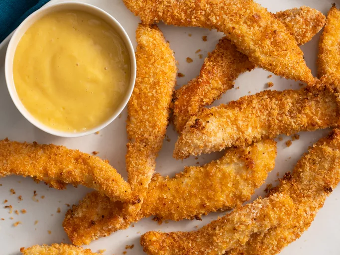

Baked Chicken Tenders

Description
These baked chicken tenders have a deliciously crispy panko bread crumb coating for that extra crunch factor without the guilt of frying!
You can marinate the tenders in light buttermilk in the refrigerator for 1 hour instead of dipping in the beaten egg.
- 4 skinless, boneless chicken tenders, cut into 1/2 strips
- 1 large egg, beaten
- 1 1/4 cups pank bread crumbs
- 2 teaspoons garlic powder
- 1 teaspoon onion powder
- 1 teaspoon ground paprika
- 1 teaspoon kosher salt
- 1 teaspoon ground black pepper
- cooking spray
- Gather all ingredients
- Preheat the oven to 450 degrees F (230 degrees C). Line a baking sheet with aluminum foil and spray with cooking spray
- Crack egg in a shallow dish. Place dry ingredients into a large freezer bag and mix well
- Dip 2 chicken strips into egg, then place in panko mixture and shake to coat. Place coated chicken onto prepared baking sheet. Repeat with remaining chicken.
- Spray each chicken tender with cooking spray twice.
- Bake tenders in the preheated oven for 7 minutes. Flip and continue to bake on opposite side until no longer pink in the centers, about 7 minutes more. Remove from the oven.
- Set an oven rack about 6 inches from the heat source and preheat the oven's broiler.
- Broil tenders in the preheated oven for extra crunch, about 1 to 2 minutes more.
- Serve hot and enjoy!